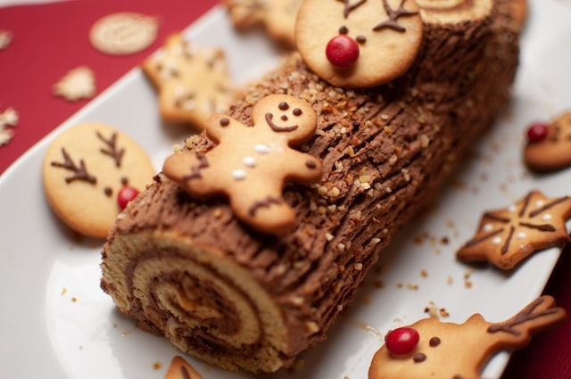

Bûche de noël
Préparation: 45 minutes
Cuisson: 20 minutes
Ingrédients
-
170 g de chocolat au lait

-
250 ml de crème (35%)
-
3/4 t de farine tout usage
-
1/4 t de cacao
-
1/4 c. à thé de sel
-
1/4 c. à thé de bicarbonate de soude
-
2 oeufs
-
1 1/4 t de sucre
-
1/4 t de beurre non salé, ramolli
-
1/2 c. à thé d'extrait de vanille
-
1/2 t de lait
Chantilly au chocolat
Gâteau
Instructions
Chantilly au chocolat
Hacher 170 g de chocolat au lait dans un bol.
Dans une casserole, porter 250 mL de crème (35%) à ébullition. Verser sur le chocolat et laisser reposer 1 minutte. Fouetter jusuq'à ce que le mélange soit homogène.
Couvrir et réfrigérer pendant environ 8 heures.
Gâteau
Placer la grille au centre du four. Préchauffer le four à 180 °C (350 °F).
Tapisser une grande plaque carrée de papier parchemin en le laissant dépasser sur le côté le plus long. Beurrer et fariner généreusement le papier et les côtés non tapissés. Réserver.
Dans un grand bol, tamiser et mélanger la farine, le cacao, le sel et le bicarbonate.
- 3/4 t de farine tout usage
- 1/4 t de cacao
- 1/4 c. à thé de sel
- 1/4 c. à thé de bicarbonate de soude
Séparer le blanc des jaunes d'oeufs. (2 oeufs)
Fouetter les blancs d'oeufs au batteur électrique jusqu'à l'obtention de pics mous.
Ajouter une partie ( 1/2 t ) de sucre graduellement en fouettant jusqu'à la formation de pics fermes..
Dans un autre bol, battre le beurre avec une autre partie du sucre.
- 1/4 t de beurre non salé, ramolli
- 1/2 t de sucre
Ajouter les jaunes d'oeufs et 1/2 c. à thé d'extrait de vanille.
À basse vitesse, incorporer les ingrédients secs en alternant avec 1/2 t de lait. Incorporer délicatement les blancs d'oeufs dans la pâte en pliant à l'aide d'une spatule. Répartir uniformément sur la plaque.
Cuire au four environ 15 minutes ou jusqu'à ce qu'un cure-dent inséré au centre du gâteau en ressorte propre.
Placer un papier parchemin idéalement sur une grille. Saupoudrer de 2 c. à soupe de sucre. À la sortie du four, saupoudrer le dessus du gâteau du reste du sucre ( 2 c. à soupe ) avant de le renverser sur le papier parchemin. Couvrir le gâteau pour qu'il conserve son humidité. Laisser refroidir à la température ambiante (environ 1 heure).
Montage
Fouetter la crème au chocolat refroidie jusqu'à ce qu'elle forme des pics fermes, mais encore souples (ne pas trop fouetter, car la crème tournera en beurre).
Retirer délicatement la plaque à biscuits et le papier parchemin. Retirer une partie du gâteau des deux côtés sur la longueur afin d'égaliser le gâteau. Étaler la chantilly sur le gâteau. Rouler le gâteau à partir du côté le plus court. Ne pas s'inquiéter si le gâteau a tendance à craquer.